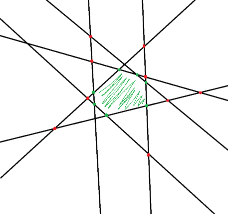
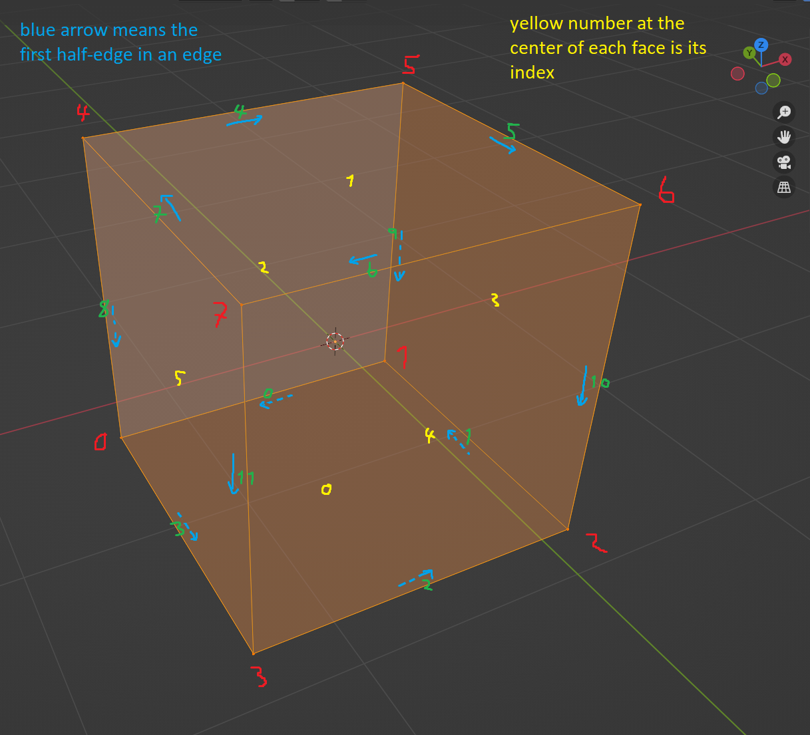

Generating a 3D mesh from a list of scissor-planes
Recently I started a new project of making a real-time 3D editor, using CSG (constructive solid geometry). I didn’t exactly know how CSG worked before, so I looked into some articles. I learned some cool things, such as what the half-edge data structure is. Previously, it had been a big mystery to me how you would actually implement a 3d modeling operation such as extrusion, bevel, or inserting edge loops, but this small idea really opened things up for me. It’s all so clear now! You should first read about it if you’re not familiar with it. You can easily convert a half-edge mesh to a traditional triangle-mesh that you’d feed to the GPU for instance.
TIP: Instead of storing half-edges separately, I’m bundling them together in a single Edge-struct that stores both of them. This way we need one less pointer to worry about. Also, if we want to store data that is shared per each edge, such as sharpness/smoothness or determining a UV-seam, it can be stored right there in one place. A half-edge index is the edge index in the first 31 bits and the last bit indicating it’s the first or the second half.
One neat idea suggested in the articles is how brushes are not defined by a mesh, but by a list of planes that each cut the space in half. It should then be easier to perform boolean operations with this lists of planes than with arbitrary triangle meshes. I’m currently on the second part of the real-time CSG blog, which presents two methods for converting a list of planes into a 3d mesh. The first “widely used” method is to project a huge axis-aligned rectangle per each cut-plane to form a polygon, then slice that polygon per each plane, and finally merge all of the vertices. My initial thoughts align with the author in that this doesn’t seem very elegant. We’d have to decide on a “big value” that covers everything. Is there a maximum value where the math starts breaking due to floating point errors? And, we’d have to use epsilons for floating point comparisons for vertex-merging, and having to merge vertices is a bit ananoying in the first place.
TIP: Instead of storing 3d planes as point + normal, store them by their mathematical coefficients ax + by + cz + d = 0, where [a, b, c] represent the normal and ’d’ the signed distance of the origin from the plane. It’s less data and less useless degrees of freedom, which is always good to minimize. Calculating the distance of a point to the plane is simply dot(point, plane.normal) - plane.d
The second, “precise”, method is to loop through all combinations of plane-triples to find the intersection vertices (that are also inside the object), then generate geometry from that. My code for this looked something like this:
for (int i = 0; i < planes_count - 2; i++) {
Plane plane_i = planes[i];
for (int j = i + 1; j < planes_count - 1; j++) {
Plane plane_j = planes[j];
for (int k = j + 1; j < planes_count; k++) {
Plane plane_k = planes[k];
Vector3 p;
if (!intersection_point_three_planes(plane_i, plane_j, plane_k, &p))
continue;
// We want to ignore vertices that lie outside the object.
// To determine whether this vertex is outside the object, we must loop
// through the planes once more; the vertex is outside if there's even one
// plane that the vertex is on the positive side on.
bool vertex_is_outside_the_object = false;
for (int l = 0; l < planes_count; l++) { // so much N!
if (l == i || l == j || l == k) continue;
if (dot(p, planes[l].abc) + planes[l].d > 0.0001f) {
// The vertex is on the positive side of the plane and thus outside the object.
// Note the annoying epsilon - if we didn't have it, some vertices could get
// completely removed in intersection points with >3 planes
vertex_is_outside_the_object = true;
}
}
if (vertex_is_outside_the_object) continue;
// Add the vertex to an array of vertices. Note that a vertex can have more than three planes going
// through it, so we need the ability to merge the vertices. In my code, I stored the vertex positions
// as three integers, so I could hash the coordinates and use a hash-table to quickly merge vertices.
...
}
}
}
While implementing it, I was aware of how O(n^a_lot) this was, but only after implementing I looked back at it and said, “Yeah, that’s too exponential.” And we didn’t even get to generating the faces/edges yet, we only did the first step of getting the vertices. I’m not entirely sure if going through all combinations of plane-triples is how you’re supposed to do it, but this is what I interpreted the article was suggesting.
I started thinking about why the “clean” solution is more computation work than the first one, which is only O(n^2), where n is the number of planes. Looking at a sketch I made, it’s clear that when adding a line (or a plane in 3d), we will have to intersect it with every single other line (even worse in 3d) and the vast majority of intersection points will be outside the object and unnecessary work:

Maybe we could keep some kind of bounding box that we would shrink with each plane and discard planes and vertices that lie outside it? This starts sounding pretty complex. I looked into known methods for solving the vertex enumeration problem, such as this “simple” and this “extremely simple” algorithm. I disagree with their definitions of simple.
I was nearly finished with implementing the dumb projected-rectangle method until it hit me: the key to being fast is to try to eliminate possible intersections as early as possible. So, if I just started with a cube and cut it with each plane step by step, we wouldn’t have the same kind of exponential explosion as the previous methods! I’d need an algorithm for cutting a mesh by a plane, but I realized that I’d likely need something similar later anyway, so I started implementing it. Once I have that, I could just hand-craft the data structure for the starting cube, scale it up a lot, and start cutting!
 A crucial help for debugging was to make a reference image of mr. base-cube. I’ve become good friends with him.
How to cut a mesh by a plane?
My algorithm for this is quite simple: start by finding any edge that intersects the plane and deleting all of the faces that lie completely outside the plane. Then start going around one of its faces until you hit another intersecting (half) edge. Split both of these edges in two and connect them by an edge. Then hop into another side of the latter half-edge and repeat until you’re back at the start. We’re effectively traveling in a circle around the mesh using the linked nature of the data structure, splitting each edge in half as we go.
This is a lot faster than any of the previously discussed methods. Per each plane, the worst case is you need to loop through all the existing geometry once as opposed to all of the other planes. The method is also as stable as it can be, as it doesn’t involve any epsilons. Hooray!
Stability is a big reason why I chose to explore CSG. Arbitrary mesh-vs-mesh booleans seem very difficult to program well. You can see this in action if you try to boolean two complicated meshes together in any 3D tool like blender/maya. Or, if the boolean’d meshes have sides that barely touch, you can expect troubles. They have a reputation for being a bit wonky in general. It makes sense, as there isn’t even an obvious answer to how they should behave in certain cases. What should happen if you boolean a mesh with holes and flying geometry with another? When we stick to the constraint that at least one of them has to be a convex mesh defined by planes, everything is a lot more intuitive. I want to avoid corner cases where things break in my editor. So far this seems plausable, wish me luck!